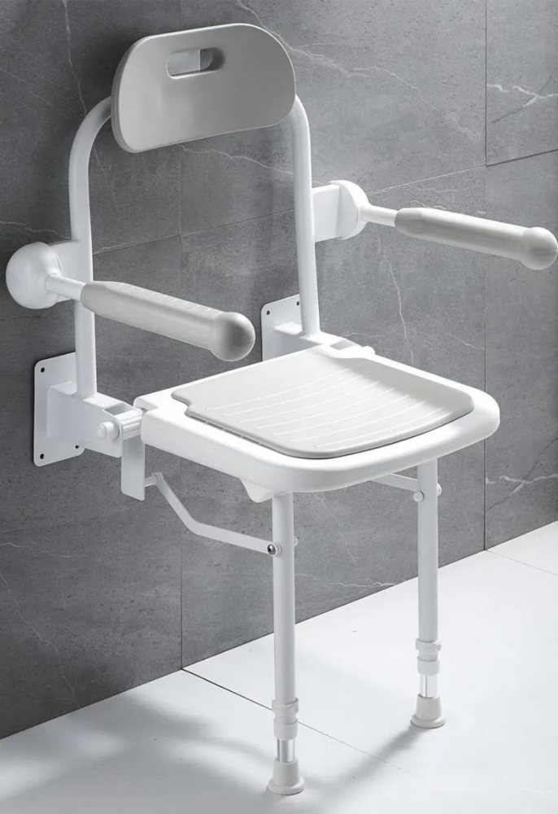
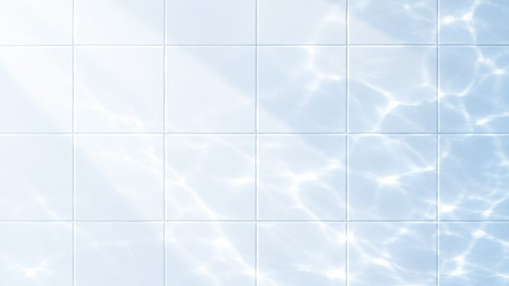
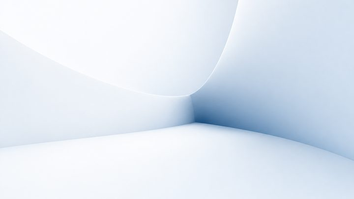

一句话了解沐岚
沐岚挂墙淋浴椅配有高标准 PU 软座垫、防滑 TPR 脚和独立折叠扶手。HDPE 座面有 5 个漏水孔，座垫可拆卸便于清洁，不用时整椅向上折叠贴墙，节省空间。
适合谁
- 放不下独立座椅的小淋浴间
- 养老机构的共用浴室
- 需要入门级坐浴产品的经销商
解决的问题
- 座面硬、冷、积水
- 活动凳在湿滑地面滑动
- 座椅挡住其他人淋浴
功能特点
PU 座垫
柔软舒适。
防滑 TPR 脚
稳固抓地。
漏水孔
HDPE 座面 5 个漏水孔。
可拆卸座垫
便于清洁。
向上折叠
节省空间。
独立折叠扶手
提供额外舒适感。
产品参数
- 304 靠背管、背板 + 铝合金烤漆座框。材质
来源：2025 产品手册.
常见问题
淋浴椅可以折叠吗？
可以。不用时整椅向上折叠贴墙，扶手也可独立折叠，淋浴区留给其他人使用。
座椅舒适、好清洁吗？
座椅配有柔软的 PU 座垫，可拆卸清洁；下方 HDPE 座面有 5 个漏水孔，不会积水。
如何防滑？
椅腿底部为防滑 TPR 脚，椅子本身固定在墙上。
养老项目可以批量订购吗？
可以。请通过 WhatsApp +86 136 6003 9128 告知卫浴数量和市场，获取 B2B 报价。
相关文章

居家浴室安全How to make a bathroom safe for elderly parents: a checklist
A practical checklist to make a bathroom safe for elderly parents: grab bars, shower seating, toilet support, night lighting and the order to do it in.
- 居家浴室安全
Seated shower vs shower chair: which suits older users?
Seated shower or shower chair for an elderly person? Compare installation, warmth, carer effort, space and fit, with a checklist for choosing.

居家浴室安全Toilet lift assist for elderly users: what to check first
Who needs a toilet lift assist, how it compares with rails and raised seats, and nine things to check before buying for a home or care home.